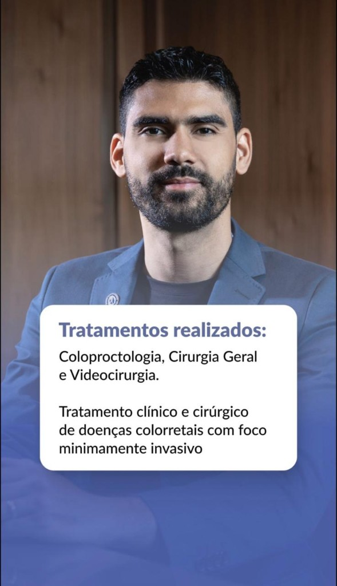

Benjamin Ramos de Andrade Neto
Especialista em Medicina Chinesa e Acupuntura
CRM-SP 219782 · Cirurgião Geral e Coloproctologista- RQE 90916 — Cirurgia Geral
- RQE 90917 — Coloproctologia
Consultório particular com Medicina Chinesa, acupuntura e fitoterapia. Nos hospitais, coloproctologia e cirurgia minimamente invasiva.

Sobre
Trajetória e formação
Dr. Benjamin Ramos de Andrade Neto é graduado pela UFC, com residência em Cirurgia Geral e Coloproctologia. Atua em São Paulo desde 2021, no Núcleo de Tumores Colorretais do AC Camargo e em hospitais de referência da cidade.
Completa a atuação hospitalar com Medicina Tradicional Chinesa no consultório particular, no Campus Uniespirito — Instituto Médico Dr. Sérgio Felipe de Oliveira (Aclimação, São Paulo).
Consultório particular
Medicina Chinesa e Acupuntura
Hospitais
Cirurgia e procedimentos
Videolaparoscopia, laser de CO₂, laser de diodo e cirurgia robótica em coloproctologia.
Ambulatórios e consultório
Onde atendo
Formação e experiência
Currículo
Fale comigo
Contato
Canais diretos para agendamento e dúvidas.
Conteúdos educativos
Vídeos e curiosidades
Dr. Benjamin comenta temas de saúde, mitos cirúrgicos e orientações do dia a dia.